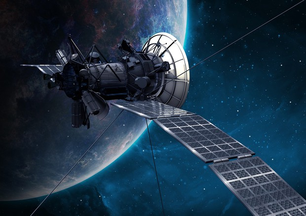

SatellitiI satelliti, le sonde, le astronavi e i razzi spaziali sono mezzi complessi e costosi da assemblare, e nel processo di progettazione, realizzazione e produzione ci sono processi ripetitivi e complicati che devono essere eseguiti con rigorose misure di precisione e spesso devono essere effettuate in camere ultra-pulite. In questi processi la robotica intelligente è già utilizzata nel processo di produzione ad esempio nelle realizzazioni 3D svincolando l’attività manuale dell’uomo. Oltre a ciò, l’AI analizza il flusso di produzione per elaborare nuove ottimizzazioni funzionali e di processo per migliorare e velocizzare gli step produttivi. Si afferma per esempio nelle GigaFactory statunitensi Tesla,Amazon e l’uso di robot collaborativi ( i cosiddetti cobot) che riducono la necessità di personale nelle camere pulite e garantiscono un lavoro eseguito correttamente. Ovviamente, non c’è solo la fase di produzione a beneficiare dell’AI,ma molto si sta sviluppando nel settore di exploitation dei servizi spaziali, cioè di utilizzo dei dati inviati dai satelliti nello spazio. |
 |
A cosa servono i satellitiPiù di 150 satelliti di questo tipo sono attualmente in orbita trasportando sensori che misurano diverse sezioni delle regioni visibili, infrarosse e a microonde dello spettro elettromagnetico. Questa flotta di satelliti è destinata a duplicarsi nei prossimi dieci anni trascinando con sé un mercato dei dati e dei servizi che dovrebbe crescere del 9,4% ogni anno per un valore di mercato al rialzo totale di 12,1 miliardi di dollari entro il 2030. Questi satelliti generano migliaia di immagini ogni minuto elaborando circa 150 terabyte di dati ogni giorno e riprendendo di tutto, dalle foto alla meteorologia dai dati ambientali alle immagini radar con risoluzioni di pochi centimetri. Per archiviare ed elaborare tutta questa mole di dati, l’AI sta diventando essenziale per sostituire gli analisti che oggi sono gli unici responsabili dell’interpretazione e dell’analisi delle immagini. Quando un analista si appresta a interpretare un’immagine, potrebbe essere necessario un confronto ripetuto dell’area ripresa attendendo cioè che il satellite torni nella stessa posizione per riprendere ulteriormente la medesima immagine. Il potere del Deep learning incrementa il potere di analisi gestendo nell’immediato il database di dati e sovrapponendo simultaneamente milioni di immagini prodotte dai satelliti con sensori differenti. In questo modo, gli elementi informativi contenuti nelle diverse immagini possono essere incrociati e analizzati dall’AI praticamente in tempo reale. Un esempio pratico di quanto tutto ciò sia direttamente applicabile alla vita quotidiana è dato dall’utilizzo dei satelliti per l’analisi dei disastri naturali dallo spazio. In questi casi, le immagini dettagliate dei satelliti aiutano i centri di protezione civile a vedere le vittime e a capire l’evoluzione fenomenologica del disastro. |
Stazione spaziale internazionaleLa Stazione Spaziale Internazionale è una stazione spaziale in orbita terrestre bassa, dedicata alla ricerca scientifica e gestita come progetto congiunto da cinque diverse agenzie spaziali: la statunitense NASA, la russa RKA, l'europea ESA (con tutte le agenzie spaziali correlate), la giapponese JAXA e la canadese CSA-ASC. |
|